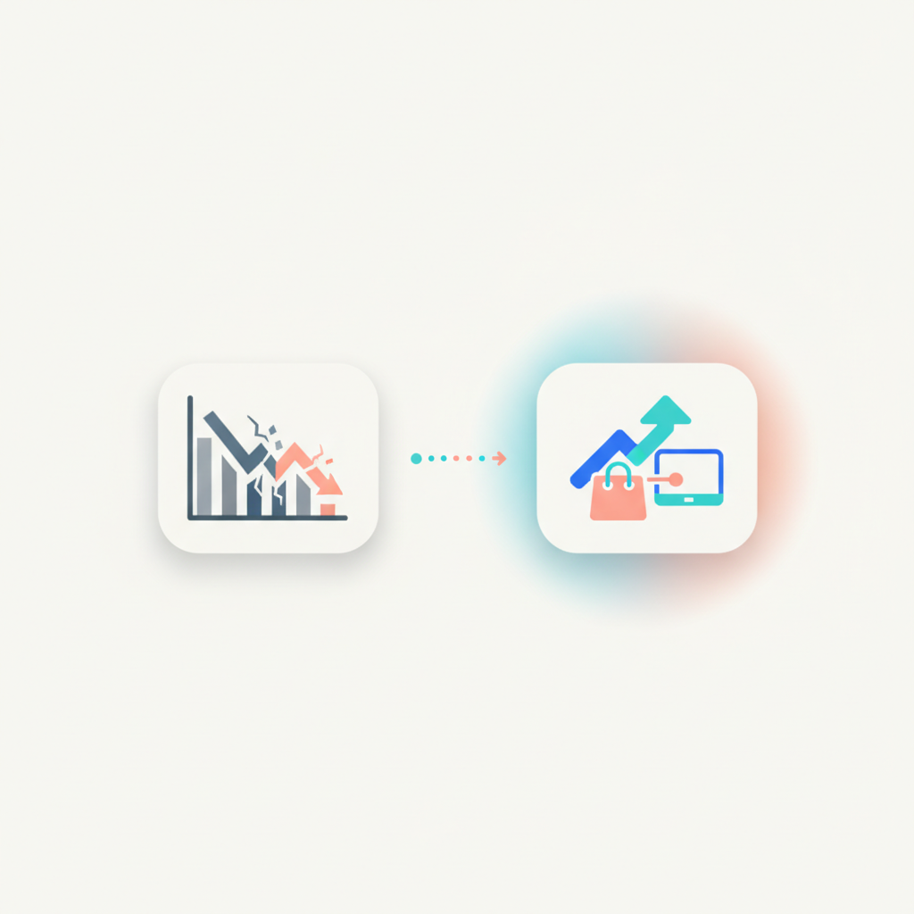
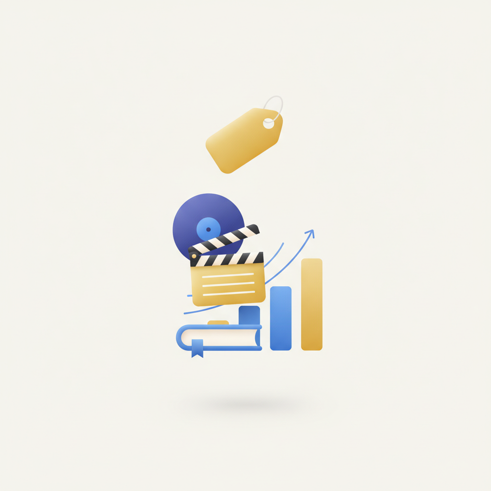
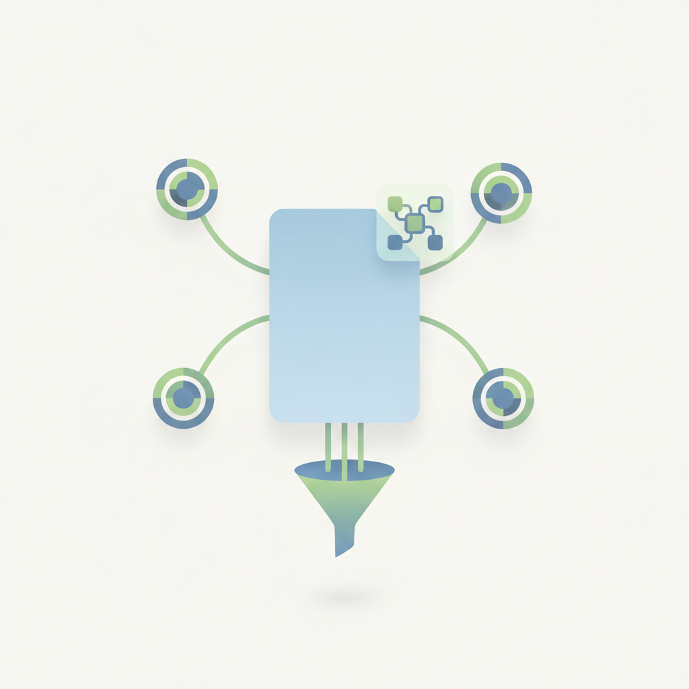
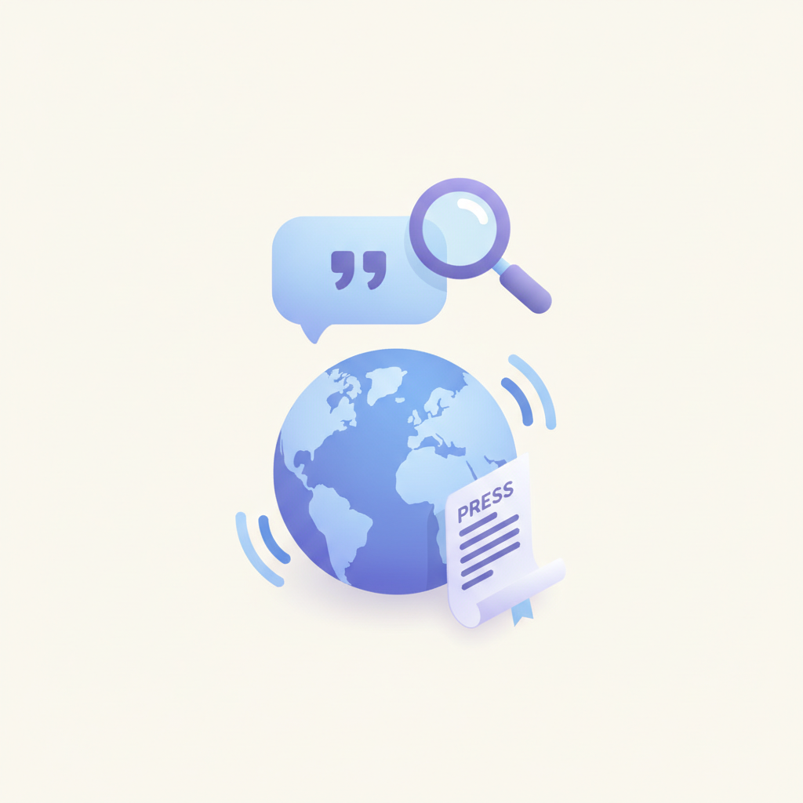
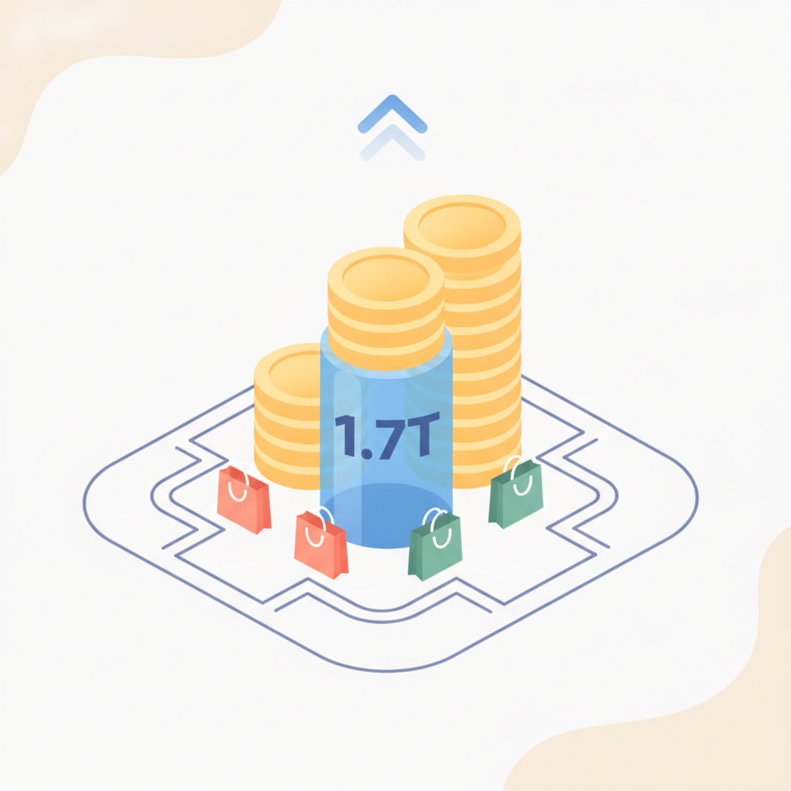
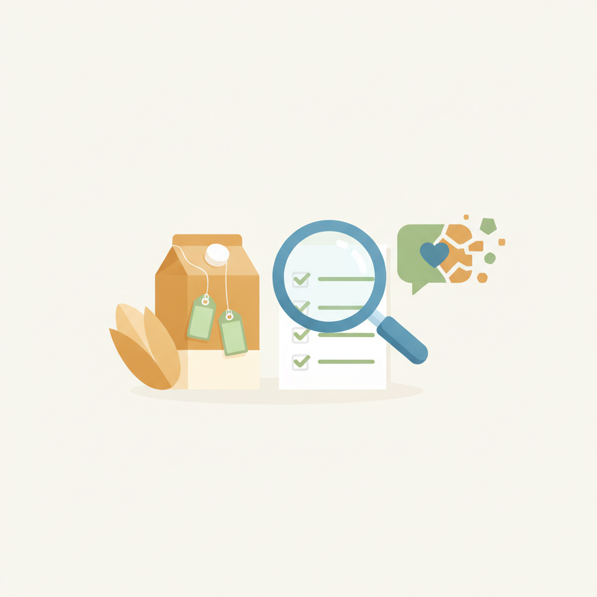
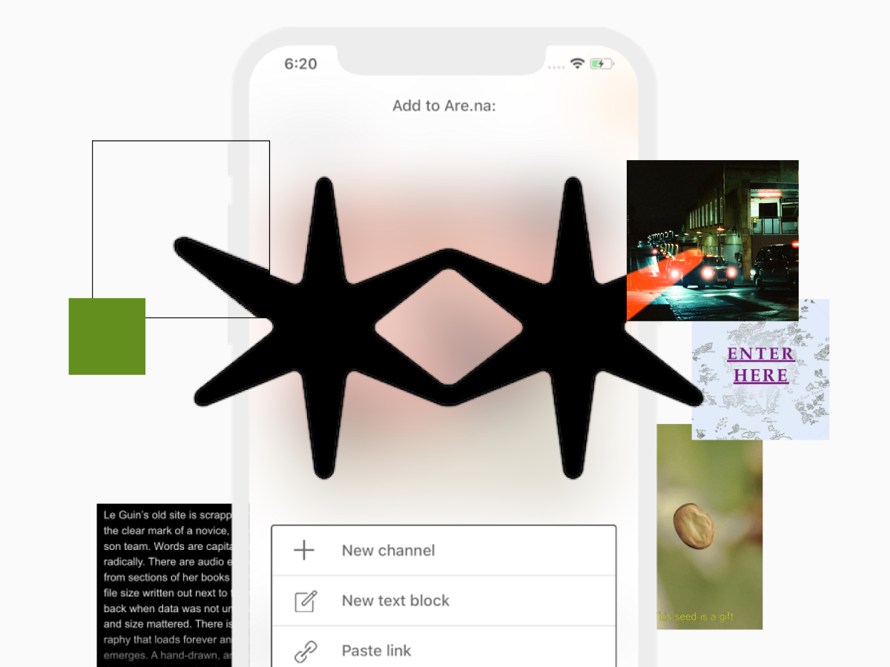

안녕하세요! 화요일 마케팅 소식 전해드립니다 😊 오늘의 캐릿 소식에서는 "회사에 알리지 말고 혼자 보세요"라는 도발적인 문구로 Z세대의 관심을 잡아끄는 콘텐츠를 다루고 있고, 풋풋레터에서는 요즘 뜨거운 '제철코어' 트렌드를 짚고 있습니다. 계절감과 시의성을 콘텐츠에 녹여내는 방식이 브랜드 커뮤니케이션에서도 하나의 문법이 되고 있다는 점에서 함께 살펴볼 만합니다.
롱블랙에서는 알고리즘도, 광고도, 좋아요도 없이 월 1억 원을 버는 SNS 플랫폼 Are.na를 조명했습니다. 도달·노출·바이럴을 최적화하는 방향으로 달려온 마케팅 업계에서, 오히려 그 반대편에 서 있는 플랫폼이 탄탄한 수익을 내고 있다는 사실은 콘텐츠와 커뮤니티의 관계를 다시 생각하게 만듭니다. 마케팅 뉴스에서도 문화적 관련성이 높은 브랜드가 기업가치를 평균 2.8배 높인다는 연구 결과가 나왔는데, Are.na의 사례와 맞닿아 있는 부분이 있습니다.
오늘도 좋은 인사이트 챙겨 가시고, 이번 주도 좋은 흐름 이어가세요! 🚀

1포레스터 "리테일 미디어 한계 뚜렷…커머스 미디어가 대안"
포레스터가 리테일 미디어가 운영 효율성과 확장성 측면에서 한계를 드러내고 있으며, 차세대 모델로 커머스 미디어가 부상하고 있다고 분석했다. 리테일 미디어 시장이 빠르게 성장했음에도 광고주가 기대하는 수준의 성과를 충족하지 못하고 있다는 진단이다. 리테일 미디어 전략을 운영 중인 마케터라면 커머스 미디어로의 전환 필요성을 선제적으로 검토할 시점이다.
›
2문화적 관련성 높은 브랜드, 기업가치 2.8배 높다
컬처랩이 커먼 인터레스트, 더그 샤피로와 공동 연구한 결과, 문화적 관련성이 높은 브랜드는 그렇지 않은 브랜드보다 평균 2.8배 높은 기업가치를 인정받는 것으로 나타났다. 브랜드가 문화와 얼마나 깊이 연결돼 있는지가 기업가치에 직접적인 영향을 미친다는 점을 실증적으로 분석한 연구다. 마케터 입장에서는 단기 성과 중심의 캠페인을 넘어 문화적 맥락과의 연결성을 브랜드 전략의 핵심 지표로 삼을 필요가 있다.
›
3검검, AI 광고 타기팅 도구 '마인드셋 에이전트' 출시
애드테크 기업 검검(GumGum)이 캠페인 브리프를 AI가 분석해 맞춤형 타기팅 세그먼트를 자동 생성하는 솔루션 '마인드셋 에이전트'를 공개했다. 광고주와 대행사가 캠페인 기획부터 타기팅 설정, 광고 집행까지 이어지는 과정을 효율화할 수 있도록 지원하며, 예측형 어텐션·컨텍스트 분석 등 AI 기반 기능을 한곳에 통합했다. 브리프 입력만으로 타기팅이 자동화되는 방식은 캠페인 운영 공수를 줄이려는 마케터에게 주목할 만한 도구다.
›
4"AI가 브랜드를 인용하는 시대" 시전, PR 역할 재정의
시전(Cision)이 AI 기반 PR 플랫폼 'PR 뉴스와이어 앰플리파이'를 국내에 공식 론칭하며, 생성형 AI가 브랜드를 얼마나 정확하게 이해하고 인용하느냐가 PR 경쟁력을 좌우하게 될 것이라는 전략 방향을 제시했다. 해당 플랫폼은 북미·남미·유럽·EMEA에 이어 아시아·태평양 지역으로 확대 출시됐다. 생성형 AI의 답변에 브랜드가 얼마나 잘 인용되는지가 새로운 PR 성과 지표로 부상하고 있어, 마케터는 AI 친화적 콘텐츠 전략을 병행해야 한다.
› 5세븐일레븐 구매 데이터, TTD 플랫폼서 광고 타기팅에 즉각 활용
더 트레이드 데스크(TTD)가 일본 세븐일레븐의 리테일 구매 데이터를 자사 플랫폼에 통합해, 광고주들이 디지털 채널 전반에서 프로그래매틱 방식으로 즉각 활용할 수 있게 됐다. 현재 일본 내 모든 광고주를 대상으로 제공되며, 편의점 구매 데이터를 DSP와 연동한 선도적 사례로 평가된다. 오프라인 구매 데이터를 디지털 광고 타기팅에 실시간으로 결합하는 리테일 미디어 모델이 아시아 시장에서도 본격화되고 있음을 시사한다.
›
6백화점 3사 외국인 매출, 상반기에만 1조7000억원 돌파
국내 백화점 3사의 올해 상반기 외국인 매출이 1조7000억원을 넘어, 지난해 연간 실적의 80~90%를 이미 달성했다. 각 사는 올해 연간 외국인 매출이 사별로 1조원을 무난히 돌파할 것으로 전망하고 있다. 과거 엔저 효과와 외국인 맞춤 서비스로 호황을 누렸던 일본 백화점의 사례가 한국에서 재연되는 양상으로, 외국인 소비자를 겨냥한 리테일 및 마케팅 전략의 중요성이 커지고 있다.
›
7오틀리가 쏘아 올린 '증거의 마케팅'…목적 마케팅의 종말?
지난 10여 년간 마케팅 업계를 지배해 온 '목적 주도(Purpose-driven)' 마케팅의 한계를 오틀리(Oatly) 사례를 중심으로 분석한 칼럼이다. 브랜드 신념을 선언하는 것만으로는 소비자의 신뢰를 얻기 어려워졌으며, 실증적 근거와 투명한 커뮤니케이션이 뒷받침돼야 한다는 논지를 전개한다. 마케터는 감성적 목적 선언에서 벗어나 검증 가능한 '증거 기반 브랜딩'으로 전략을 전환할 필요가 있다.
›


“알고리즘에 가운뎃손가락을Fuck an algorithm.”이렇게 외치는 서비스가 있어요. 이름은 Are.na(이하 아레나). 좋아요도, 광고도, 맞춤형 알고리즘도 없어요.
아티클 읽기 →브랜드 진단부터 지금 당장 해야 할 우선순위까지,
30분 무료 상담에서 함께 정리해드려요.
이미 수십 개 브랜드가 상담받았습니다.
내 브랜드처럼, 함께 고민하는 팀원의 마음으로 봅니다.
스타트업 대표·마케팅 담당자를 위한 30분